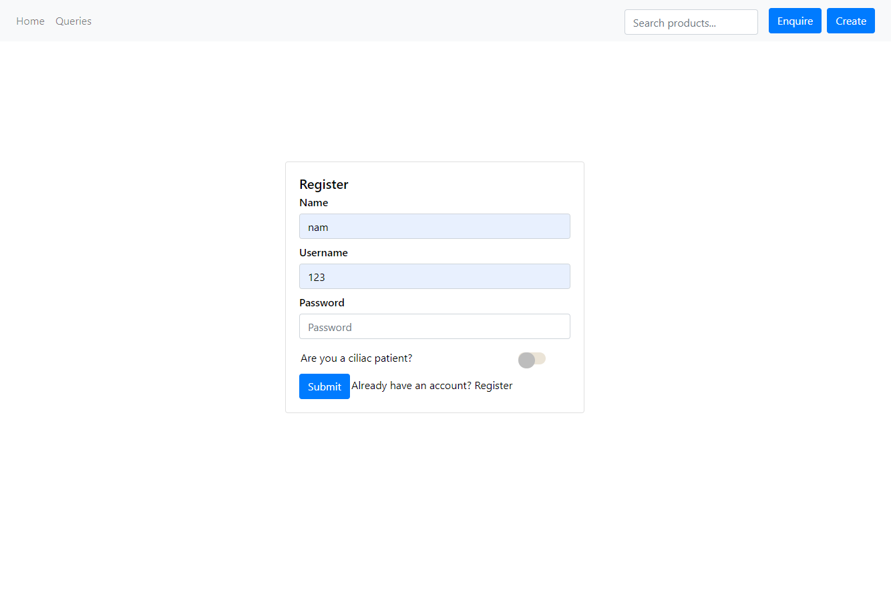
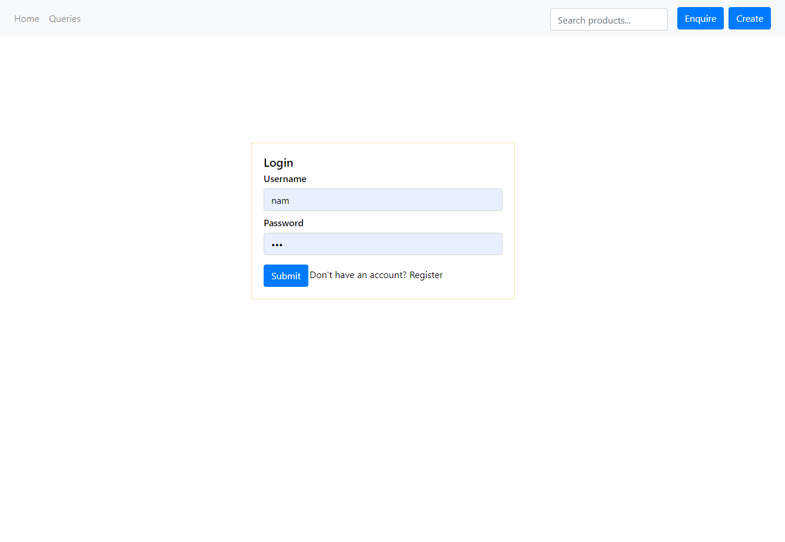
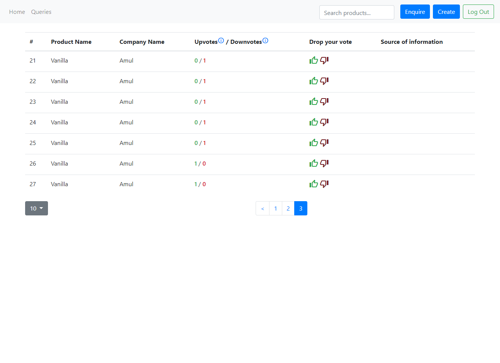
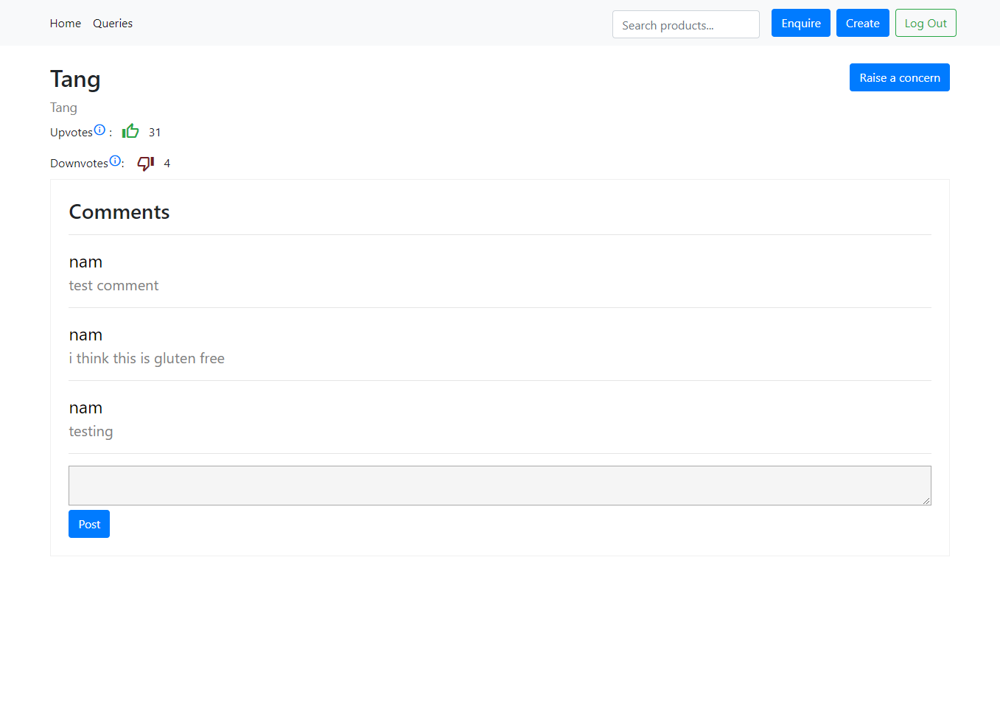
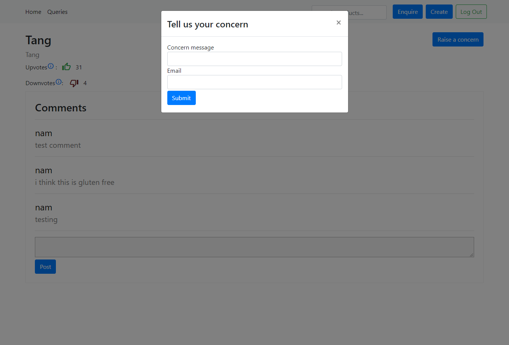
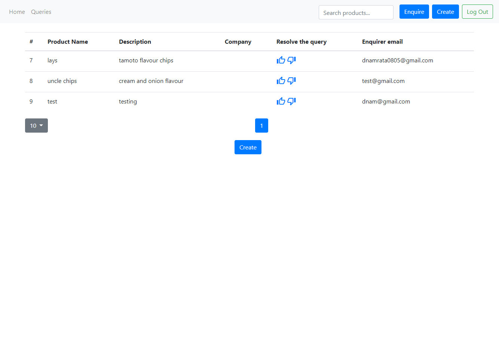

Celiac
(2019)
The intent behind this project was to provide celiac patient community with a platform to maintain and
track a list of products about their gluten content that everyone can refer to.
This is still an academic project so there is no branding done yet and I have kept the styling and
appearance to very minimalistic.
Current Scope :
• Auth : Login and register
• Create a product form: If the user has information about gluten content of a product,
they can add that product with an upvote (it's gluten free) or downvote (it contains gluten).
• Enquire about a product form: If a user has query about gluten content of a product,
they can add a query about that product.
• Vote for a product: While browsing through the list, users can vote the existing products with an
upvote
(it's gluten free) or downvote (it contains gluten) so the popular opinion is recorded.
• Search For a product: Users can search for a specific product.
• Resolve the queries: Users can resolve the queries with an initial upvote or downvote. It just adds
that
product in the product list and gets removed from the queries list.
• Product details page.
• Add and view comments about a product.
• Raise a concern about a product.
Future Scope :
• Apply filters on products.
• User roles based admin system to create company/brand lists, resolve queries and add products.
• Profile details page.
• Pagination.
• Rate/Report profiles.
Technology :
Codebase :
Front-end : ReactJS + hooks + context api + webpack + react-bootstrap
back-end : nodeJS + expressJS + JWT + sql
Reusable Components:
* Front-end :
1. Login
2. Sign Up
3. Product cards for mobile view
4. Create a product form
5. Enquire about a product form
6. Smart search input box :
This search input box hits the request only when the user stops typing. The waiting duration is passed through props.
7. Toolbar
Services:
* Front-end :1. Agent : This module consists of the configurable API call function. This function can be called from wherever this module is imported by passing the parameters like request name(ex. post, get,etc ), endpoint , body, and a Boolean for the loader display. This function then returns the response body asynchronously after some conventional error handling.
2. Node server : This server sends build file of the server side rendered project as a response if the request is made from browser. If the request is made from crawler bots , the server redirects those requests to the project which is server side rendered so that they can access meta information in purposes of SEO.
3. Backend node server : This is a typical backend server enabling client to communicate with the database and handle other jobs such as JWT, email sending, etc. Authenticator service authenticates the users , creates and decodes JWT to maintain login sessions. Validator Service validates users using policies that I defined. This is mainly to define permissions for user roles.
Standard features developed:
• Register:
 Open in new tabRegister API adds users to the database.
• Login:
 Open in new tabLogin API creates a JWT that expires after 2hours.
• Product List:
 Open in new tabA bootstrap table to show all the products along with gluten content and other data.
Actions :
a. Upvote/downvote for the product's gluten content
b. Navigate to product details page.
• Product details page:
 Open in new tab  Open in new tabThis page has detailed information about the products.
Actions :
a. Upvote/downvote for the product's gluten content
b. Add comments and see comments
c. Raise concerns about the product.
• Queries page:
 Open in new tabThis page has detailed information about the queries.
Actions :
a. Resolve the queries :
Resolving the query add that product to product list with the initial vote that resolver gives and deletes that product from query list.
• Mobile responsive:
 Open in new tab
Open in new tab This is how the product details page is rendered in mobile. As the table seemed full of clutter in small screens I went for card view.